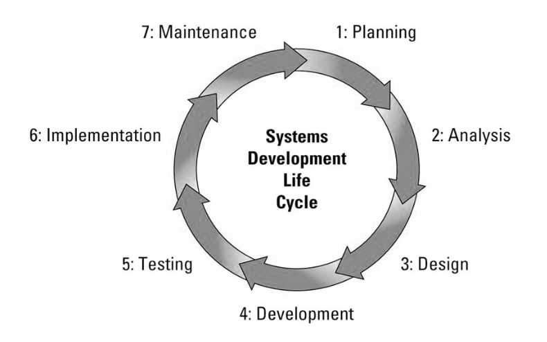

One of the fundamental procedures of developing software in a step by step manner is by following the Software Development Life Cycle (SDLC). SDLC is a popular practice that is followed by different organizations for designing and developing high-quality software applications.
